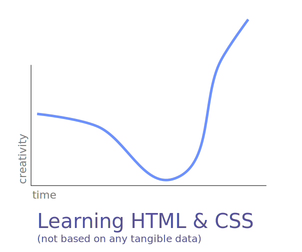
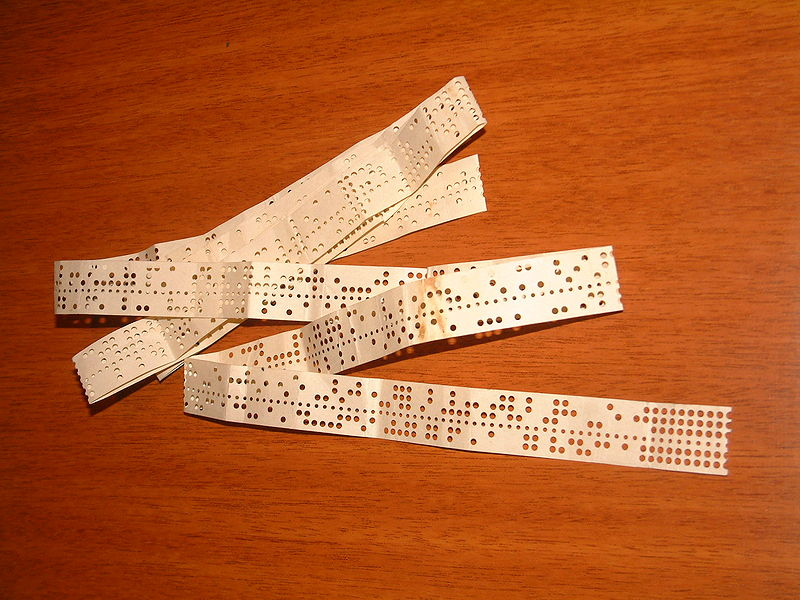
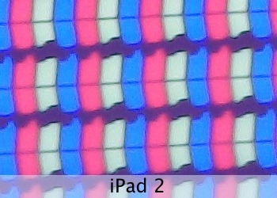
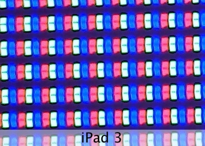
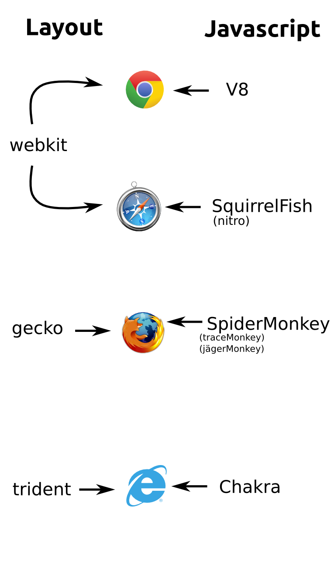

Up To Speed
A crash course to learn how the web works
Before we begin...Get a decent text editor
- Mac
- Win
- Linux, FreeBSD, and other *nix
- you already have all you need
1 - Intro
Why?
You might be here for specific reasons...Let's hear them
- You are not a cook if you only write cookbooks
- If you design in photoshop, you are only giving directions
- Specially when your design must adapt across multiple resolutions and devices
Web design took its roots in Print design
Run away!
Web design is architecture
...If you absolutely need to compare it to something (buildings don't move)
Like architecture, you are not only providing a support for a message
you are actually
Creating an environment for the user to live in
What is this experience?
- Graphics?
- Design?
- Navigation?
- ...?
It is
EVERYTHING
therefore
You also should know
EVERYTHING
There are Detractors...
- visual designers 'who know' give me blocky, boxy, «webby» designs.
- They are not compelled to think out of the box
- Clean code and great user experience contradict each other
- Temptation to go with the first idea in order to not change code
- Time constraints ("People should stick with what they’re good at")
Curiosity keeps us hungry. It leads us to tackle new challenges when the easy questions have all been answered. It makes us wonder how things could be better—even when they are, if we’d just pause to admit it, pretty damn good already.
Sara Wachter-Boettcher

I have no hard proof, but all great designers I know are also coders
So...
Pull out your editors and let's start with something simple
Write
<!doctype html>
<html>
<head>
<title>A Title</title>
</head>
<body>
</body>
</html>
save as "index.html"
2 - Let's go through the key words
Basic Building Blocks
Character Encoding
The process of translating something into something else
The First Encodings

Text is important
It is the Universal Interface
The web relies on open standards
Standards
Not Specifications
They are decided by the World Wide Web Consortium (W3C)
Other words to know
- Images (raster & vector)
- Interface
- API
- Resolution
Let's do some Hexadecimal Maths!
(Promise, it's not that hard)
Let's decompose "125", for example
| 1 |
2 |
5 |
| 3 digits |
2 digits |
1 digit |
125 is ( 1 x 10 x 10 ) + ( 2 x 10 ) + 5
do not overthink it, just follow for now
So Why 10?
Is it magical?
Nope
We just happen to have ten fingers; it's convenient for us to count that way. You can take any number as a basis for representing your digits.
REMEMBER
The difference between decimal, hexadecimal, and other mathematical notations is in the WRITING. They are the same numbers,
just written differently (like writing arabic with latin characters)
Therefore,
Mathematic-averse people can breath, we are NOT doing math.
So, what's special about hex?
It's base 16; It means we begin adding a digit after 15, not after 10.
What!?
Yup
| 0 |
1 |
2 |
3 |
4 |
5 |
6 |
7 |
8 |
9 |
10 |
11 |
12 |
13 |
14 |
15 |
| 0 |
1 |
2 |
3 |
4 |
5 |
6 |
7 |
8 |
9 |
A |
B |
C |
D |
E |
F |
Let's decompose "FF", for example
Remember, F is 15.So:
FF is ( 15 x 16 ) + 15 = 255
You can begin overthinking it now
Color Time!
See how fast you can get these colors:
- red
- blue
- green
- yellow
- pink
- dark gray
- dark red
- white with a shade of blue
Pixels & DPI
Pixels
 
3 - How the web works
Ping Pong
The web is based on layered protocols and a REST paradygm that is Stateless
Although this is changing
If you didn't make any sense out of those words, no worries, we are going to be explaining them
Protocols
Etiquette (play /ˈɛtɨkɛt/ or /ˈɛtɨkɪt/, French: [e.ti.kɛt]) is a code of behavior that delineates expectations for social behavior according to contemporary conventional norms
Example of headers in a http request
Request:
GET /images/logo.png HTTP/1.1
Response:
HTTP/1.1 200 OK
Content-Type: text/html
A Word about weight
The laziness of optimization
4 - What is a webpage
Front End Stuff
A Webpage is
- Markup
- Styling
- Interactivity
- Images
- Plugins
MVC
Separation of concerns
Structure of a webpage
- doctype
- attached assets
- meta-tags (not for search engines!)
- document tree (might contain plugins)
XML
Extensible Markup Language
A solution for storing data that is both human-readable and machine-readable
Follows a set of conventions that can be specified
HTML
A subset of XML, a markup language and a semantic language
Use "inspect"!
Let's do something useful
contact <a href="">me<a>
CSS
A cascading styling language
Follows a convention, each vendor implements his own version
You should strive to be semantic
Javascript
A programming language (it has nothing to do with java!)
Client-side, but is being used more and more server-side
Browsers
The way browsers work is reminiscent of the way a webpage works

5 - Homework
Study!